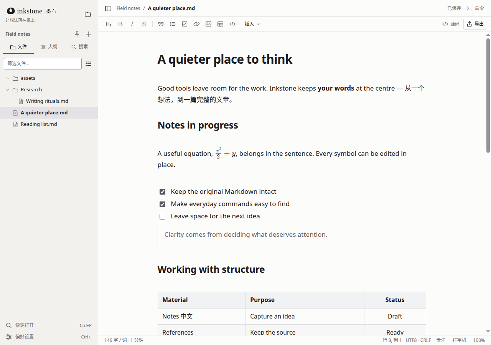
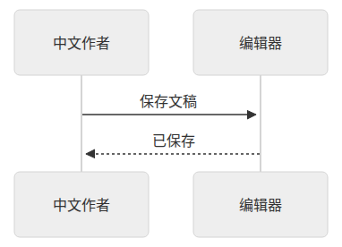
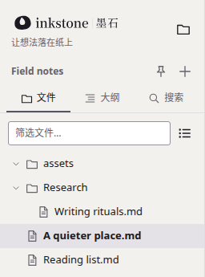

开源本地优先的写作工具
墨石：让想法落在纸上
一个安静的本地 Markdown 编辑器。
从一行随笔，到公式、图表与完整文章。
Linux 源码构建 ↗
Windows / Linux · 本地文件 · 核心写作离线可用
- 平台
- Windows x64 · Linux
- 文件
- 本地 .md 文件，原文保留
- 账号
- 无需注册，不经云端
- 界面
- 简体中文 / English · 浅色 / 深色
- 许可
- AGPL-3.0 开源
真实界面 · 简体中文 · 浅色主题
1280 × 900

1 2 3 41文件侧栏
文件、大纲与搜索三个入口，直接浏览电脑上的文件夹。
2正文排版
舒展的行宽与行距，中英文混排依然清晰。
3行内公式
公式就写在句子里，点击即可就地修改。
4表格
表格在页面中直接编辑，不必回到源码。
功能
01 — 03
01即时预览 · 源码模式
写作，
自然发生。
直接在页面里写 Markdown，标题、列表与公式随写随现。点开渲染后的公式，就地修改它的源码；需要逐字掌控时，一键切到源码模式，选区与撤销记录都还在。
- 快捷键
- Ctrl + / 即时预览 ⇄ 源码模式
- 原文
- 不重排、不改写你的 Markdown
即时预览点击公式，源码就地展开

Ctrl+/整篇切换
源码模式同一段文字，原样的 Markdown

代码 · 表格 · 公式块同一份文档中


Mermaid 图表sequenceDiagram
02公式 · 表格 · 代码 · 图表
思考，
也有结构。
行内公式与 LaTeX 公式块、可直接编辑的表格、带语法高亮的代码块，以及 Mermaid 图表，都写在同一份 Markdown 里，也都在页面上清楚呈现。
- 公式
- 行内 $…$ 与公式块 $$…$$
- 代码
- 语法高亮，下拉选择语言
- 图表
- Mermaid 流程图、时序图等
03本地文件 · 离线编辑 · 导出
文稿，
留在手边。
打开电脑上的任意文件夹，文稿就是普通的 .md 文件。无需账号，不上传云端，断网也能照常写作。写完之后，导出为 HTML、PDF 或 PNG。
- 文件
- 本地文件夹 · 搜索 · 自动保存与恢复
- 离线
- 核心写作无需联网
- 更多格式
- 可选 Pandoc，导出 Word 等
墨石中的文件夹

硬盘上的同一个文件夹
Field notes/ ├── assets/
├── Research/
│ └── Writing rituals.md
├──
A quieter place.md
└── Reading list.md
普通 .md 文件，任何编辑器都能打开。
HTML离线导出
PDF离线导出
PNG离线导出
DOCX …经 Pandoc 转换
你的下一篇文章，从这里开始。
开源，本地，安静。下载 Windows 安装版，或从源码构建 Linux 版本。